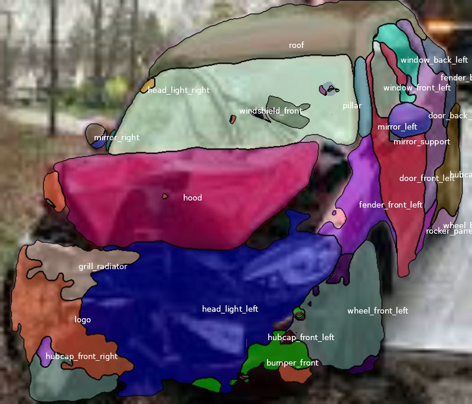
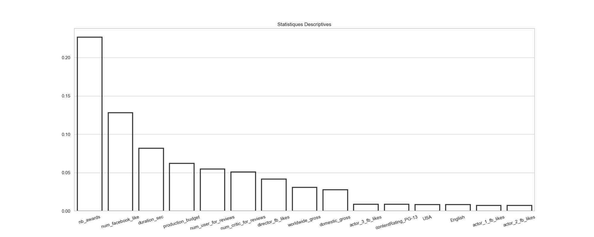
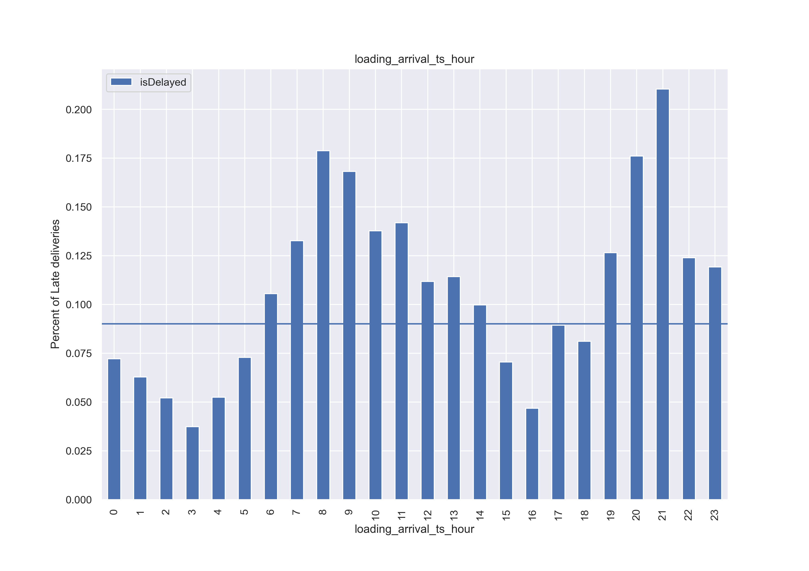
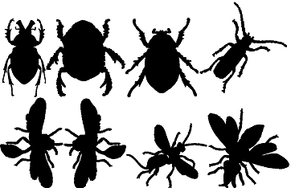

Un projet très amusant à mettre en place vu mon attrait pour le cinéma. J'ai collecté un nombre de données important afin de comprendre les statistiques descriptives d'un score qui reflète la qualité des films. C'était l'occasion d'appliquer plusieurs modèles d'apprentissage automatique et comprendre leurs fonctionnements en pratique.

J'ai travaillé sur la problématique de prédiction d'ETA qui m'intéresse beaucoup. J'ai pu récupérer des données de livraisons afin d'effectuer une analyse exploratoire et de prédire le temps d'arriver des camions. J'ai également effectué la prédiction des retards par un modèle de classification pour comparer les résultats des deux modèles.

Dans ce projet de recherche en mathématiques, nous avons exploré la méthode des signatures pour effectuer le clustering des séries temporelles. Nous avons également comparé cette méthode avec d'autres types de clustering classiques avant d'appliquer nos résultats pour réaliser des classifications.